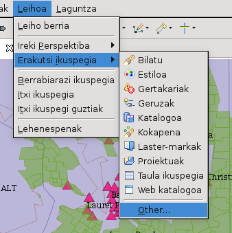
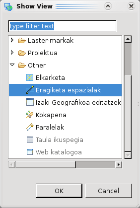
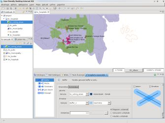

Eragiketa espazialak
Sarrera
Orrialde hau uDig-en Spatial Operations hedapenen erabiltzaileentzako dokumentazioaren sustraia da. Axios-ek Gipuzkoako Foru Aldundiako Mugikortasuna eta Lurralde Antolaketa sailak sustaturiko Spatial Operations and Editing Tools proiektupean hornitzen ditu.
Hedapen hauek eragiketa espazial batzuk barneratzen dituzte, non horietariko bakoitzak sarrerako geruza bat edo gehiagoko featuren gainean lan egiten du eta gehienetan eragiketa espazial espezifikoa aplikatzearen ondorioz sorturiko featurekin berri bat osatzen dute.
| Eragiketa Espazialen bista aktibatzeko, Leihoa->Erakutsi Bista->Bestelakoak aukerara joan, 1 irudian agertzen den bezala. |
Erakutsi Bistaren leihoa agertuko da, hautatu bisten zuhaitzetik Eragiketa Espazilaren aukera 2 irudian agertzen den bezala eta Onartu sakatu. |
|  |
 |
| 1 irudia. beste bista batzuk ireki |
2 irudia. Eragiketa Espazialen bista ireki |
uDig-i Eragiketa Espazialen bista irekitzeko esan ondoren, hau 3 irudian bezala agertuko da.

3 irudia. Eragiketa Espazialen Bista
 |
Gogoratu uDig-en Bistak, RCP-n oinarrituriko gehiengoaren aplikazioetan bezala, oso moldakorrak dira. Antolamendu estandarra ez bazaizu egokia iruditzen, saia zaitez izenburu barra narraztuz bere kokapena aldatzen, Bista azkarra bezala adieraziz beharrezkoa denean soilik agertzeko, edo Bereizia bista bezala leiho baten moduan jardun daiten. |
Eragiketa Espazialak
Egiaztatu hurrengo lotura hauek eskuragarri dauen hedapen bakoitzarentzat, non erabiltzaileentzako dokumentazio sustraia aurkitu daiteke.
- Bete eragiketa — Feature berri bat sortzen du geruza baten poligonoaren ertz bat eta beste geruzaren lerroa erabiliz.
- Buffer eragiketa — Aukeratutako geometrien inguruan buffer azalera bat kalkulatzen du.
- Desegin eragiketa — Aukeratutako ezaugarriagatik batutako eta fusionatutako Featureak dituen geruza berri bat sortzen du.
- Gurutzatu eragiketa — Bi geruzen arteko gurutzaketa geometrikoa kalkulatzen du.
- Join Geom eragiketa — Adierazitako erlazio espazialarekin bat eginten duten bigarren geruzako featureak dituen geruza berri bat sortzen du
- Moztu eragiketa — Bi geruzen arteko diferentzia geometrikoa kalkulatzen du.
- Polygon to Line eragiketa — Poligono geruza bat LineString motako geruza baten bihurtzen du.
- Zatitu eragiketa — Poligono geruza bat zatitzen du LineString motako feature bat erabiliz
- Zulatu eragiketa — Poligono baten barruan zulo bat sortzen du LineString feature bat erabiliz.
(c) Copyright (c) 2004-2008 Refractions Research Inc. and others.
{kind=link}